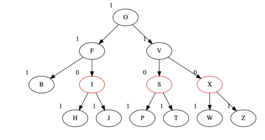

Introduction
A Red-Black Tree is a self-balancing binary search tree where nodes follow specific properties to ensure logarithmic time complexity for insertion, deletion, and search operations.
Properties of Red-Black Trees
- Each node is either red or black.
- The root node is always black.
- Red nodes cannot have red children (no two consecutive red nodes).
- Every path from the root to a leaf contains the same number of black nodes (black-height).
Operations
- Insertion - Follows standard BST insertion with color adjustments and rotations.
- Deletion - Ensures tree balance while maintaining Red-Black properties.
- Search - Operates like a regular BST with balanced structure.
Example
The diagram below illustrates a Red-Black Tree:
More Information
Learn more about Red-Black Trees on Wikipedia.